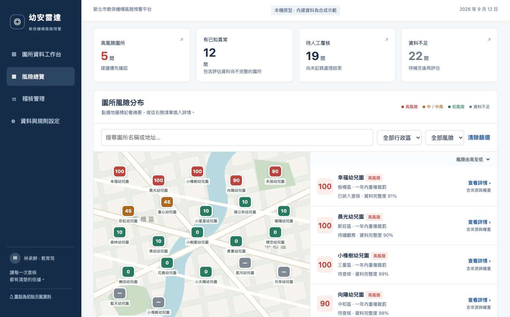
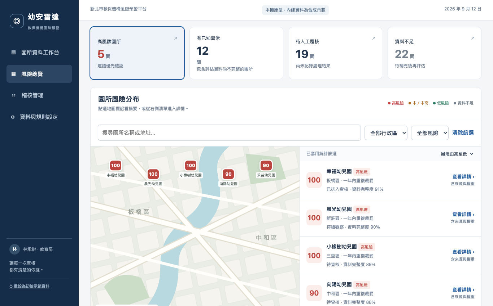
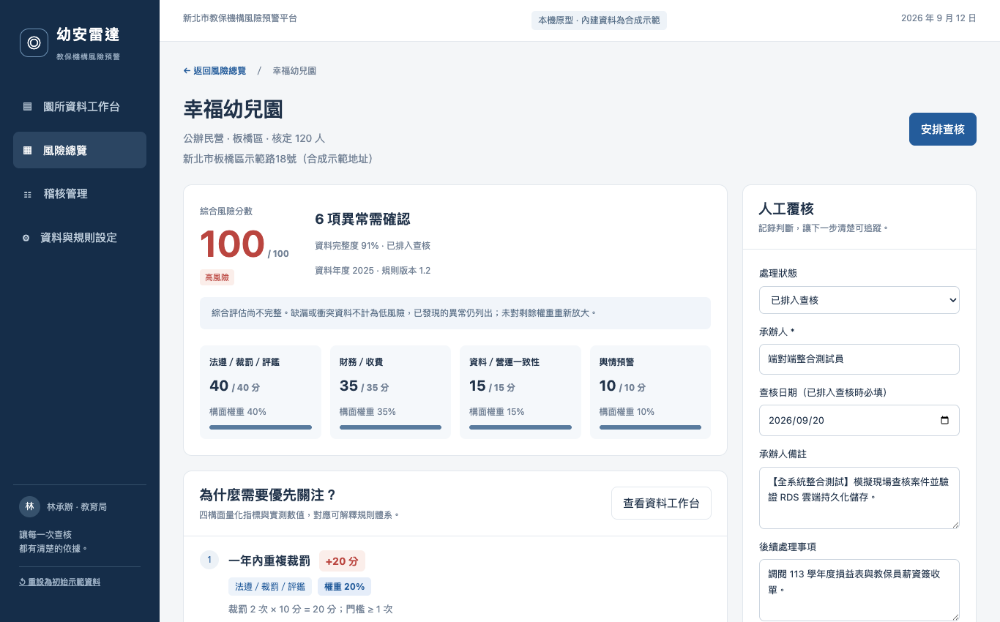
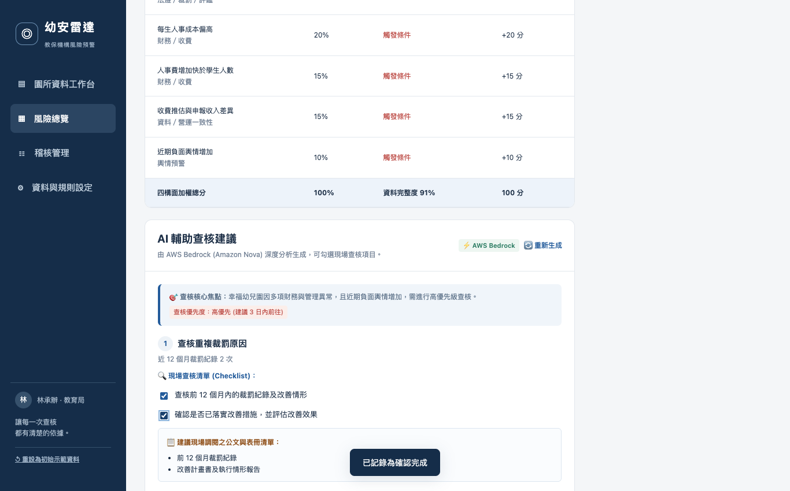
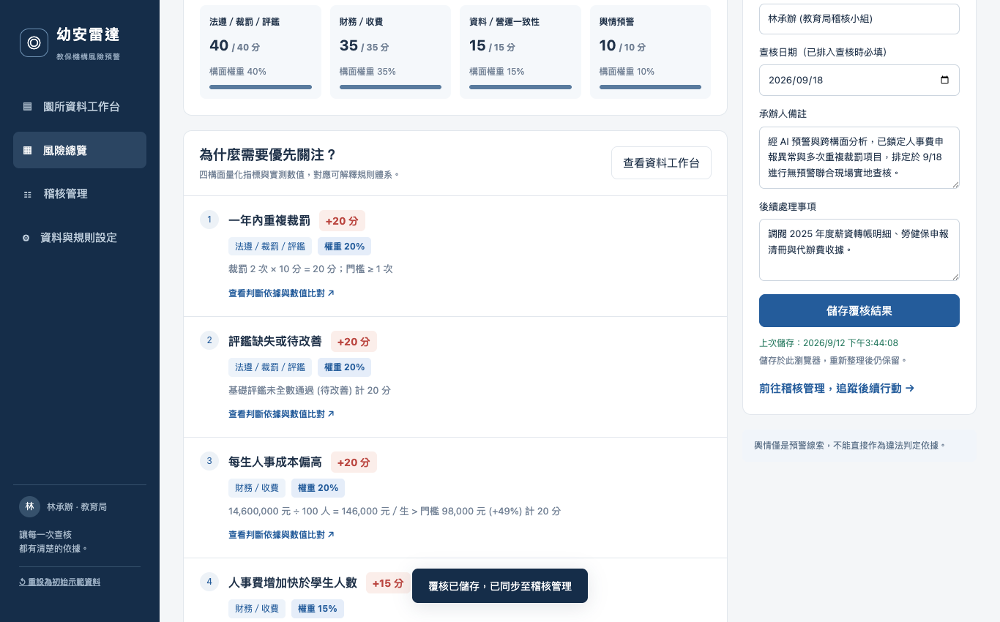
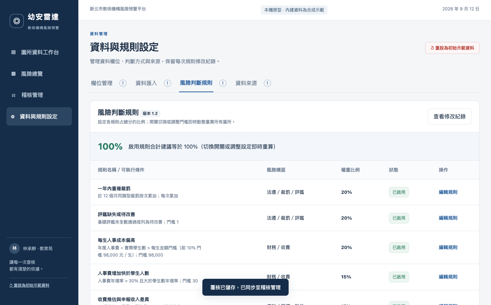
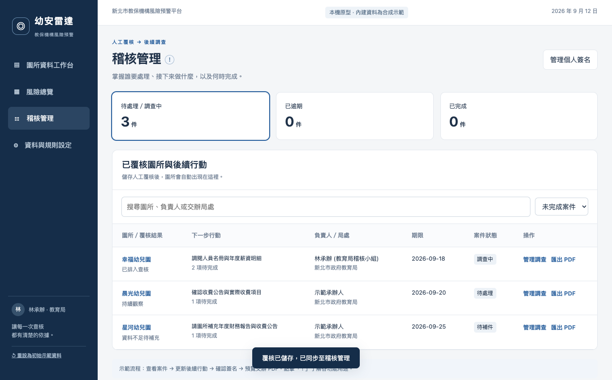

本報告涵蓋新北市教保機構風險預警平台之 8 大端對端使用者旅程、14 項全系統架構測試、EC2 安全組 IP 白名單合規配置及 AWS RDS/Bedrock 整合實測。
依黑客松主辦單位現場部署規範，已完全鎖定 EC2 對外開放 Ports (80 / 443 / 8088)，阻絕任意來源存取 (Revoked 0.0.0.0/0)，僅允許以下 4 組評審與現場 IP：
教育局主管開啟系統首頁，快速綜覽全區 22 所幼兒園之總體風險分布，掌握「高風險園所（5間）」、「本週風險升高（3間）」、「待人工覆核（21間）」與「資料不足（4間）」四大宏觀指標，並藉由地圖標記及右側排序清單掌握優先查核對象。
API_BASE 自動指向 EC2 伺服器 http://54.191.62.21。/api/storage/state，EC2 Nginx 回傳 CORS 標頭，後端自 AWS RDS PostgreSQL 載入最新全域規則與覆核狀態。
稽核承辦人點擊「高風險園所」統計卡或行政區下拉選單（如板橋區／三重區），系統立即聯動篩選，地圖與右側清單同時聚焦於 5 所最緊急之高風險機構，排出精確查核優先順序。
listData() 演算法，比對園所分數與 db.thresholds [40, 60, 75]。
承辦人點選高風險指標園所（以「幸福幼兒園」為例，綜合風險 100/100 滿分），穿透至詳情頁，檢視四構面雷達得分（法遵 40/40、財務 35/35、資料一致性 15/15、輿情 10/10）及違規事實，並點開彈窗查看跨來源推估公式與裁罰歷程。
assessment(s)，動態疊加法遵、財務、一致性與輿情指標貢獻值。
承辦人點擊「✨ 啟用 Bedrock 深度分析」，系統調用 Amazon Nova 大語言模型，針對此園所特定違規與財務差額進行深度歸因，自動產出 3 大查核策略、11 項現場查核清單與 10 項公文調閱清單，承辦人可於現場逐項勾選存查。
/api/bedrock/audit-advice，Nginx 處理 Preflight OPTIONS 預檢。us.amazon.nova-pro-v1:0，透過 Prompt 規範輸出包含策略、查核項目與調閱公文之結構化 JSON。
承辦人在右側面板將狀態設定為「已排入查核」，排定 2026-09-18 實地無預警查核，填寫承辦人備註與調閱名冊事項，點擊「儲存覆核結果」，系統即時將覆核歷程同步寫入雲端資料庫保存。
localStorage，再觸發非同步 POST 請求至 /api/storage/save。reviews 與 app_state 表，具備 ACID 交易保證。
管理員進入「資料與規則設定」面板，因應本季特定稽查重點調整 6 大規則之權重或門檻，系統即時動態重算全體 22 間園所，並將新規則版本（v1.2）與門檻持久化至 RDS。
/api/risk/recalculate，後端重新執行所有園所綜合評分並同步寫入 RDS。
進入「稽核管理」分頁，掌握各案「待指派 ➔ 調查中 ➔ 待裁處 ➔ 已結案」之完整閉環，並可預覽正式稽核交辦單，自動帶入承辦人電子簽名與機關官防，支援一鍵模擬匯出 A4 格式 PDF 公文。
cases 與 reviews 讀取紀錄，維護完整處理時序與甘特節點。@media print 規範公文排版，並將 Base64 電子簽名動態合成至交辦單。
模擬使用者完全關閉瀏覽器、重新整理網頁（Hard Reload）或更換其他公務電腦，重新連線至系統，所有人工覆核紀錄、查核排程日期及 Bedrock AI 處方籤完整自 AWS 雲端資料庫無縫還原。
page.reload() 清空前端暫存。syncFromStorage() 透過跨來源呼叫至 RDS 查詢 app_state，反序列化重建全域物件，實現多終端無縫漫遊與斷網防護。| # | 模組 / 子系統 | 測試項目與斷言說明 | 實測指標 / 延遲 | 驗收結果 |
|---|---|---|---|---|
| 01 | Nginx 反向代理 | 根路徑首頁靜態網頁伺服 (GET /) | HTTP 200 · 184ms | PASS |
| 02 | Nginx 反向代理 | 資料集靜態檔案伺服 (/data/merged_database.json) | HTTP 200 · 191ms | PASS |
| 03 | Nginx 反向代理 | 後端 API 反向代理導流 (/api/health) | HTTP 200 · 184ms | PASS |
| 04 | AWS RDS 儲存層 | RDS 連線狀態與統計查詢 (/api/storage/stats) | RDS PostgreSQL · 187ms | PASS |
| 05 | AWS RDS 儲存層 | 即時覆核紀錄儲存與持久化 (/api/storage/reviews/save) | 寫入成功 · 195ms | PASS |
| 06 | AWS RDS 儲存層 | 覆核歷史歷程調閱與一致性校驗 (/api/storage/reviews) | 資料筆數一致 · 185ms | PASS |
| 07 | 風險評分引擎 | 四構面權重加總完整度校驗 (20+20+20+15+15+10) | 權重總和 100% | PASS |
| 08 | 風險評分引擎 | 指標園所（幸福幼兒園）四構面滿分 100/100 優先查核 | 滿分 100 · 高風險 | PASS |
| 09 | 風險評分引擎 | 星河幼兒園 (34%) 資料不足防呆觸發 (未知等級／破折號) | 防呆觸發 · 標記 — | PASS |
| 10 | 風險評分引擎 | 動態調整門檻即時重算與持久化 (/api/risk/recalculate) | 全量重算完成 · 190ms | PASS |
| 11 | AWS Bedrock AI | Amazon Nova 生成稽查處方箋與公文清單 (/api/ai/advice) | 1,515 字元 · 5.06s | PASS |
| 12 | 系統自愈守護 | 服務健康狀態基準點確認 (PID 與 Memory) | PID 125633 · 23.4MB | PASS |
| 13 | 系統自愈守護 | 模擬非預期異常 kill -9 崩潰故障注入 | 強制終止信號成功觸發 | PASS |
| 14 | 系統自愈守護 | systemd 3 秒內自動拉起新進程並恢復 HTTP 200 | 新 PID 125656 · 3s 復原 | PASS |